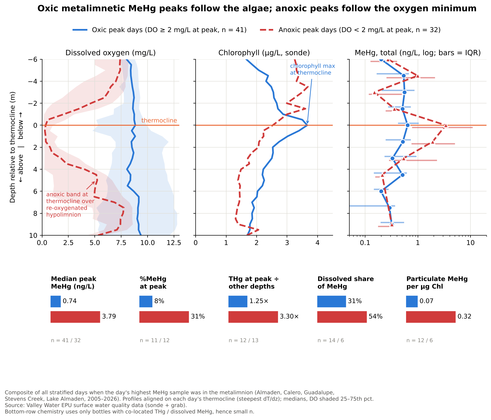
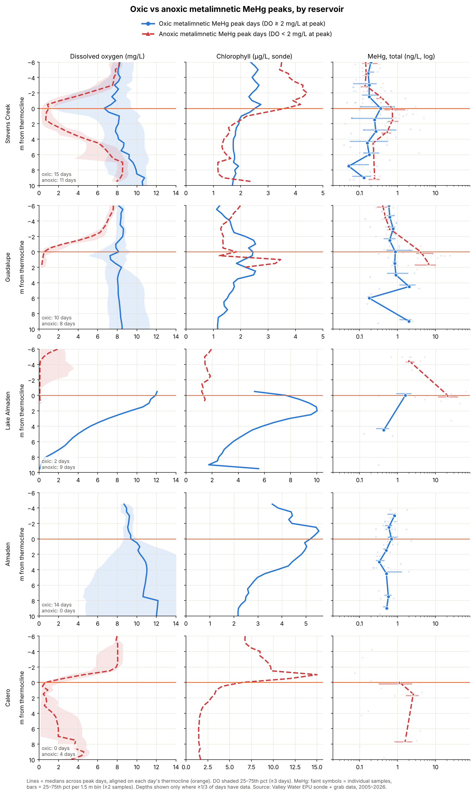
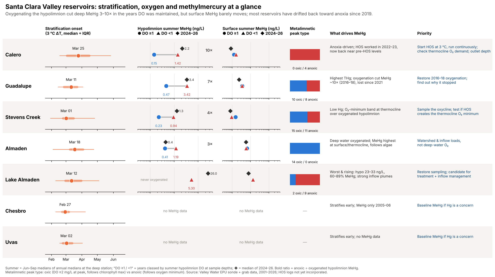
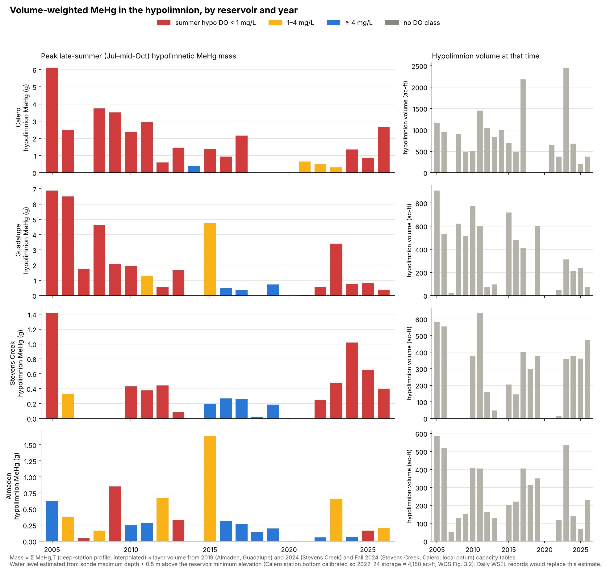
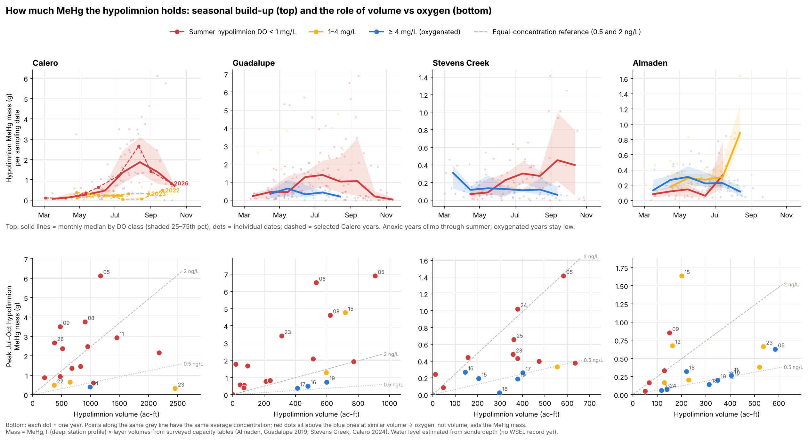

← All visualizations
Report figures

Oxic vs anoxic metalimnetic MeHg peaks (all reservoirs)

Oxic vs anoxic peaks by reservoir

Reservoir summary card

Hypolimnetic MeHg mass by year

Seasonal build-up and mass vs volume